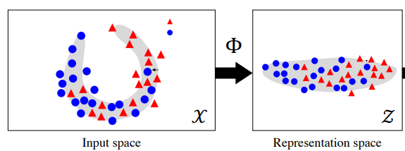
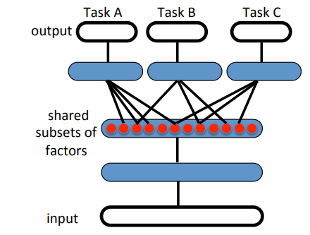
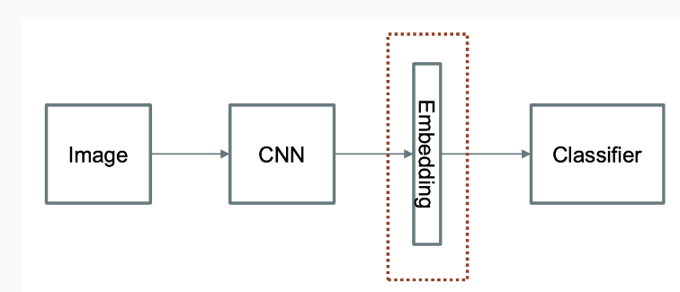
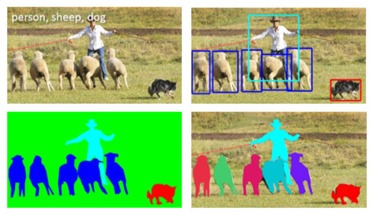
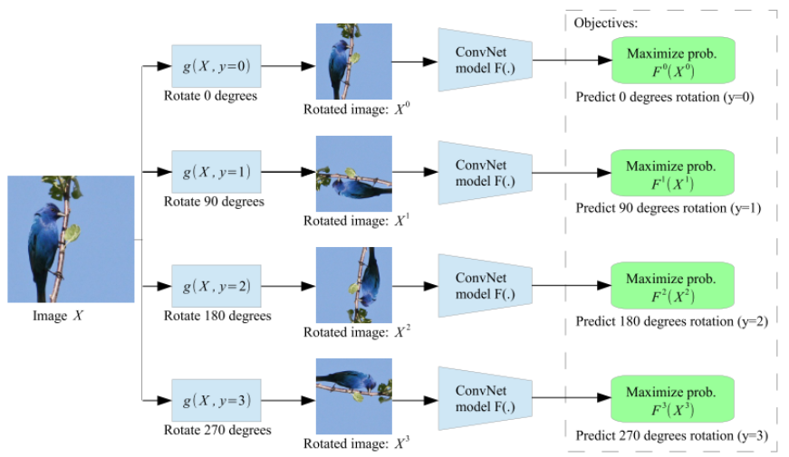
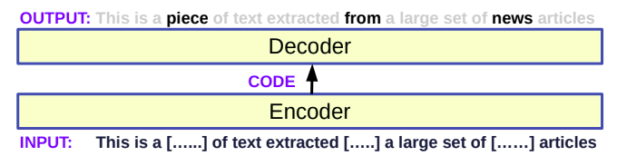
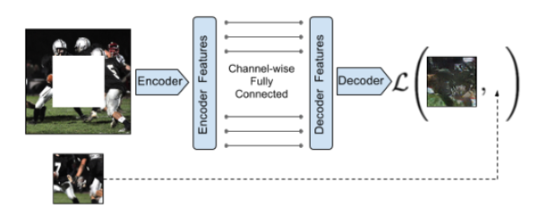

Representation Learning#
Representation Learning involves learning an effective way to represent data, typically by mapping it into a feature space where meaningful patterns and structures are preserved. This approach aims to automatically discover useful features from raw data, enhancing the performance of various machine learning tasks. Techniques like contrastive loss and triplet loss are often used in this context to ensure that similar data points are close together and dissimilar ones are far apart in the learned representation space.
So, Representation learning involves:
Encoding static observations (e.g., images) into a latent space.
Evolving weights that align with the ground truth in the observation space.

Representation learning can be divided into:
Supervised representation learning: learning representations on task A using annotated data and used to solve task B
Unsupervised representation learning: learning representations on a task in an unsupervised way (label-free data)
Whats Downstream tasks#
Downstream tasks refer to specific applications or problems that benefit from the features or representations learned by a model. In the context of machine learning, once a model learns to represent data (e.g., identifying patterns or features in images, text, etc.), these representations can be used to improve performance on related tasks, known as downstream tasks.
For example:
In Natural Language Processing (NLP), if a model learns to understand the structure and meaning of sentences, it can then be applied to downstream tasks like sentiment analysis, translation, or summarization.
In Computer Vision (CV), if a model learns to recognize basic features in images (like edges, shapes, etc.), these features can be used for downstream tasks like object detection, image classification, or facial recognition.
Latent \( Z \)-space#
In machine learning, the goal is typically to predict a target value \( y \in Y \) given input data \( x \in X \). To achieve this, we aim to learn a function \( f: X \rightarrow Y \) that maps the input data \( x \) to the predicted output \( y \).
In representation learning, the approach shifts from directly learning a function \( f : X \rightarrow Y \) to first learning a representation \( g : X \rightarrow Z \). Then, a classifier or predictor \( f : Z \rightarrow Y \) is learned on top of this representation.
Goal: The aim is to develop representations \( g \) for each domain, enabling the learning of simple predictors for various tasks. This makes the process faster and more efficient.
Advantage: Learning the representation \( g \) often requires little or different forms of supervision, allowing us to leverage more data, including unlabeled or weakly labeled data.
Learning \( g \)#
We start by learning a mapping \( g: X \rightarrow Z \), where \( X \) is the original input space, and \( Z \) is the learned representation space.
The goal is to transform the input data \( x \in X \) into a new representation \( z = g(x) \in Z \) that captures the essential features needed for various tasks.
Learning Simple Predictors \( f \)#
Once we have the representation \( z \), we learn a function \( f: Z \rightarrow Y \) for a specific task. For instance, if the task is classification, \( f \) could be a linear model or a simple neural network that maps \( z \) to the output \( y \).
Mathematical Explanation#
Assume we have multiple tasks \( T_1, T_2, \ldots, T_n \), each requiring us to predict different outputs \( y_1, y_2, \ldots, y_n \).
Instead of learning separate functions \( f_1: X \rightarrow Y_1, f_2: X \rightarrow Y_2, \ldots, f_n: X \rightarrow Y_n \) for each task directly from the original input space \( X \), we first learn a common representation \( g: X \rightarrow Z \) regardless of Task.
Then, for each task \( T_i \), we learn a simpler function \( f_i: Z \rightarrow Y_i \) on top of the shared representation \( z = g(x) \).
or

Latent with Deep#
In deep learning, a model \( f \) is typically composed of a sequence of simpler layers \( f_1, f_2, \dots, f_L \). This composition can be represented as:
Where:
\( f_1, f_2, \dots, f_L \) are individual layers or transformations.
\( f \) is the overall model that maps the input \( x \) to the output \( y \).
Learning the Representation \( g \)#
When the model \( f \) is trained to solve a specific task (e.g., object detection in images), it inherently learns not only the final task output but also an intermediate representation:
Here, \( g \) is a function that maps the input \( x \) to an intermediate representation \( z \), often called a “feature representation.” This representation \( z = g(x) \) is optimized to be particularly effective for the task at hand.

Cost function for Representation Learning#
In representation learning, the cost function, or loss function, is crucial for guiding the learning process. The choice of cost function depends on the specific goals of the learning task.
Triplet Loss#
Objective: To ensure that the distance between an anchor and a positive sample (from the same class) is smaller than the distance between the anchor and a negative sample (from a different class) by a margin.
Cost Function: $\( L_{\text{triplet}} = \max \left( 0, D_{\text{anchor, positive}}^2 - D_{\text{anchor, negative}}^2 + \alpha \right) \)\( where \) D_{\text{anchor, positive}} \( and \) D_{\text{anchor, negative}} \( are the distances between the anchor and positive, and the anchor and negative samples, respectively, and \) \alpha $ is a margin.
NCA (Neighborhood Component Analysis) Loss#
Objective: To learn a distance metric that improves nearest neighbor classification accuracy.
Cost Function: $\( L_{\text{NCA}} = - \sum_{i} \log \left( \frac{\exp(-\|Lx_i - Lx_j\|^2 / \tau)}{\sum_{k \neq i} \exp(-\|Lx_i - Lx_k\|^2 / \tau)} \right) \)\( where \) L \( is the linear transformation matrix, \) \tau $ is a temperature parameter, and the sum is over all training instances.
Combining simple concepts to derive complex structures#
Deep neural networks are fundamentally representation learning models, particularly in supervised settings. These networks typically consist of two main components:
Encoder: transforms the input data into a low-level representation subspace.
Linear classifier: to separate classes
These learned representations are dense, compact, and transferable to similar data modalities. From edge and corner transfer to label of image.
Example:
Train a Convolutional Neural Network (CNN), then transfer the learned knowledge to another task, often one with insufficient labels to train a deep network from scratch. This approach, known as transfer learning, has been successfully applied across various domains and is widely used in commercial applications.
Example for Understanding the Term “From Scratch”
Building a Model from Scratch: Instead of relying on libraries like TensorFlow or PyTorch, you would write your own code to define the model architecture, initialize parameters, and implement training algorithms.
Insufficient label in pixel level#
For tasks such as object classification, detection, and segmentation, the number of labeled examples diminishes substantially as we move from whole-image labels to pixel-level annotations.

In healthcare applications like breast cancer metastasis detection, annotating large datasets is both expensive and time-consuming, often requiring hours of work from specialized expert pathologists with extensive training
Soloution of Problem#
All of these examples highlight the importance of learning generalizable representations from non-annotated data. Many research areas, including
semi-supervised
self-supervised learning try to learn representations that can be transferred to new tasks using just a few or not using annotated examples at all.
Deep Unsupervised Representation Learning
Key Focus:
Deep unsupervised representation learning is centered on extracting useful features from unlabeled data. The main goal is to improve downstream tasks while reducing dependence on human annotations.
Recent Developments:
Importance of Unsupervised Learning:
Grown due to advances in NLP, specifically with models like BERT and GPT (Miniproject). These models showcase the power of label-free training.
Prototypical Contrastive Learning of Unsupervised Representations
Self-supervised learning involves devising a predictive task (pretext task)
pretext task A pretext task in self-supervised learning is a task designed to help the model learn useful features from unlabeled data.
it doesn’t require manual annotations. For example, a common pretext task in image processing might involve predicting the rotation angle of an image. Although the model doesn’t have explicit labels for what each rotation represents, learning to predict this rotation angle helps the model understand important features of the image, such as shapes and textures. These learned features can then be applied to more traditional tasks like image classification or object detection.

Another examples:
Text processing (BERT) 
Image Inpainting: unsupervised Learning Self-supervised pretext tasks consist of taking out some parts of the data and challenging the network to predict that missing part.

Labeling data can indeed be expensive#
Complexity of Labeling Task
Simple Labels: Tasks like labeling images with straightforward categories (e.g., “cat” or “dog”) may be relatively inexpensive if you can use crowd-sourcing platforms.
Complex Labels: Tasks requiring detailed annotation or expert knowledge (e.g., medical imaging, legal documents) can be much more costly due to the need for specialized skills and time.
Volume of Data
Large Datasets: For large datasets, the cost can add up quickly. For example, labeling thousands or millions of images or text samples can require significant resources.
Quality of Labels
Consistency and Accuracy: Ensuring high-quality, accurate labels often requires multiple rounds of verification and validation, which adds to the cost.
Training and Quality Control: Training annotators and implementing quality control measures can further increase expenses.
Domain Expertise
Specialized Knowledge: Data that requires domain expertise (e.g., medical images, legal documents) demands annotators with specialized training, which can be more expensive than general labeling tasks.
Time Constraints
Speed of Labeling: Fast turnaround times for large-scale labeling projects can lead to higher costs, as additional resources may be needed to meet deadlines.
Tools and Infrastructure
Annotation Tools: Developing or purchasing sophisticated annotation tools and infrastructure can also add to the overall cost.